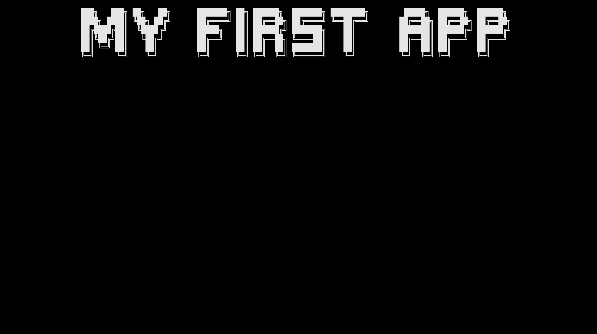
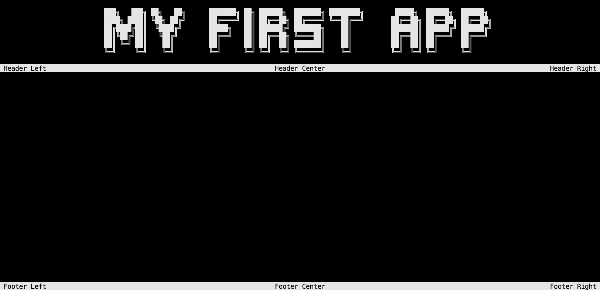
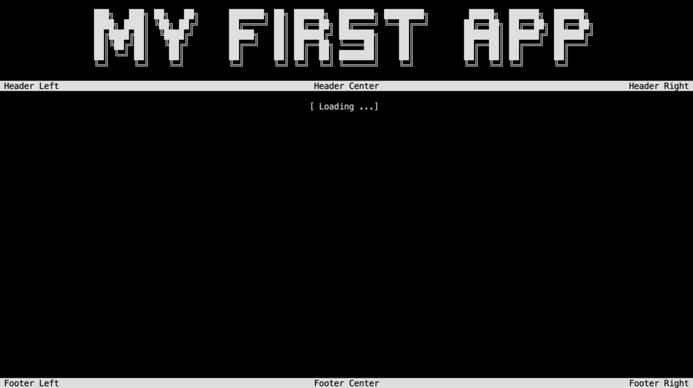

First app
This tutorial will show you how to create a simple console application using the ConsoleAppVisuals package. You will learn:
- How to add elements
- Discover:
Title,Header,Footer,FakeLoadingBar,Promptand finallyDialogelements - How to get the response from the user
- How to exit the application
Setup
First, let's create a dummy project to work with. Please choose your method according to your preference:
Open your terminal and navigate to the folder where you want to create your project. Run the following command:
dotnet new console --output MyApp --use-program-main
If your file structure is like this:
Example_project <-- root
└───MyApp
├───obj
├───MyApp.csproj
└───Program.cs
Jump into the MyApp folder:
cd MyApp
Finally, run the following command to install the library:
dotnet add package ConsoleAppVisuals
Tip
Consider running the same command to update the package to the latest version, stay tuned!
Open the Program.cs file and ensure that the content is the following:
namespace MyApp
{
internal class Program
{
static void Main(string[] args)
{
Console.WriteLine("Hello World!");
}
}
}
Let's try to run the app by typing the following command in your terminal:
dotnet run
Building the app
Warning
Add these using statements at the top of your Program.cs file to use the ConsoleAppVisuals package and its elements:
using ConsoleAppVisuals;
using ConsoleAppVisuals.PassiveElements;
using ConsoleAppVisuals.InteractiveElements;
using ConsoleAppVisuals.AnimatedElements;
Sometimes, you will need to add more statements. All available namespaces are available in the references section.
Let's start by removing Console.WriteLine("Hello World!"); instruction and adding the following line to your Main method to set up the console (clear and set the cursor invisible):
Window.Open();
Now, let's create a minimal app with a Title, a Header, a Footer, a FakeLoadingBar and finally a Prompt element.
Title
Now we can use all the elements from the package. Our first passive element will be a Title. Learn more
Title title = new Title("My first app");
Then we can add it to the Window:
Window.AddElement(title);
And finally, we can render the Title from the Window:
Window.Render(title);

Tip
You may update the style of the Title element like the one below by giving a look at this article: create and use fonts.

Header, Footer
Add the Header and Footer passive elements to the Window:
Header header = new Header();
Footer footer = new Footer();
Window.AddElement(header, footer);
Window.Render();
Instead of rendering each element separately, we rendered the Title, Header and Footer elements at once using the Window.Render() method. So you may remove the Window.Render(title) instruction.

FakeLoadingBar
Now let's add a FakeLoadingBar animated element to your previous code and run it. Learn more
FakeLoadingBar loadingBar = new FakeLoadingBar();
Window.AddElement(loadingBar);
Window.Render(loadingBar);
Warning
As you may have noticed, we have the same output as earlier. No loading bar was rendered on the console. Passive elements are activated by default when added to the window. On the contrary, interactive and animated elements need to be activated manually.
To do so, replace the Window.Render(loadingBar) instruction with the following:
Window.ActivateElement(loadingBar);
Tip
The method Window.ActivateElement() will activate the element and render it on the console. Do not forget to write Window.Render() before to render the other passive elements like Title, Header or Footer for example.
Prompt
Now let's add a Prompt interactive element to your previous code and run it. Learn more
Prompt prompt = new Prompt("What's your name?");
Window.AddElement(prompt);
Window.ActivateElement(prompt);
Get response and Dialog element
A Prompt element will give you different interaction information. To get these information, let's add the following line of code after the Window.ActivateElement(prompt) line. Learn more about var
var response = prompt.GetResponse();
The previous line will retrieve a response object that has the following properties:
Status: is how the interaction ended. It can beSelected(pressed enter),Deleted(pressed delete) orEscaped(pressed escape). It is accessible using:response?.Status.Value: is the user's response data. Its type depends on theInteractiveElementyou are using. In this case, thePromptelement returns astring. It is accessible using:response?.Value.
flowchart LR
A[Prompt] --> B[response]
B -->|how the user exit| C[response?.Status]
B -->|what is output value| D[response?.Value]
C -->|can be displayed using| E[Visual Elements]
D -->|can be displayed using| E
Note
Here we use the ?. operator to avoid a NullReferenceException if the response is null.
Meaning:
- If
responseisnull,response?.Statuswill returnnull. - If
responseis notnull,response?.Statuswill returnresponse.Status.
If you are certain that response is not null, you can use response!.Status directly. This will indicate to the compiler that response cannot be null in your configuration.
Finally, let's add a Dialog interactive element to display the user's response on the console.The Dialog is interactive too and will give you a response. You may catch it if needed (as you may create an element with 0, 1 or 2 options, it will give you the selected option). Learn more
Dialog text = new Dialog(
new List<string>()
{
"You just wrote " + response!.Value + "!",
"And you " + response!.Status + "!"
},
null,
"OK"
);
Window.AddElement(text);
Window.ActivateElement(text);
Exit the application
Finally, let's exit smoothly the application:
Window.Close();

Conclusion
And that's it! You have created your first app using the ConsoleAppVisuals package. You can now run the app and see the result.
Here is the full code:
Window.Open();
Title title = new Title("My first app");
Window.AddElement(title);
Header header = new Header();
Footer footer = new Footer();
Window.AddElement(header, footer);
Window.Render();
FakeLoadingBar loadingBar = new FakeLoadingBar();
Window.AddElement(loadingBar);
Window.ActivateElement(loadingBar);
Prompt prompt = new Prompt("What's your name?");
Window.AddElement(prompt);
Window.ActivateElement(prompt);
var response = prompt.GetResponse();
Dialog text = new Dialog(
new List<string>()
{
"You just wrote " + response!.Value + "!",
"And you " + response!.Status + "!"
},
null,
"OK"
);
Window.AddElement(text);
Window.ActivateElement(text);
Window.Close();
Have a question, give a feedback or found a bug? Feel free to open an issue or start a discussion on the GitHub repository.